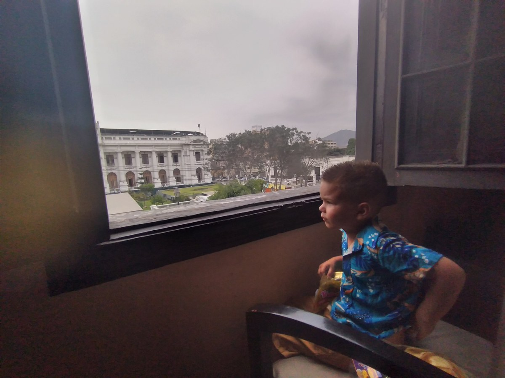

Autism Services in Paraguay: What Families Need Beyond Childhood
A practical guide to checking adult eligibility and building a usable support network.

Sam at our Airbnb in Lima, Peru, in January 2022. Peru’s Congress building was just across the little street, with a bustling market and Chinese restaurant below us and Chinatown a few blocks away. We loved being part of the everyday life of that neighborhood.
Autism services beyond childhood need to support an adult's whole life: healthcare, communication, daily activities, relationships, personal assistance, and decisions about where and how to live. In Paraguay, the practical starting point is to confirm which providers actually accept adults and what help they deliver, rather than assuming a childhood referral will continue unchanged.
Paraguay has a national autism programme and published health-policy work. That matters. It also leaves families with a more specific question: what can this particular adult use, in this location, with these support needs? This guide helps turn a general search for “autism services” into a usable set of questions.
Start with the help, not the label
Two adults with the same diagnosis may need very different arrangements. One may want help finding a clinician who communicates clearly. Another may need someone alongside them throughout appointments, meals, travel, and personal care. Neither person's needs can be understood from the diagnosis alone.
Write down three things the person wants to do and the help that would make each possible. Include the person's own words, gestures, communication system, or observed choices. If you are interpreting a preference, label it as your interpretation and look for ways to check it.
For example, “needs social services” is difficult to act on. “Wants to visit the same neighborhood shop on Fridays; needs a familiar person for the journey, help communicating, and a quiet place to pause” gives a provider something concrete to consider. This is a hypothetical example, not a description of a service already available.
A useful request describes the activity, the assistance, the time involved, and any important access needs. It does not require telling every receptionist the person's full medical history.
Separate healthcare from everyday support
A clinical appointment can help assess health concerns, review treatment, or identify appropriate specialist input. It will not necessarily provide assistance at home, transport, respite, or a meaningful afternoon. Likewise, an activity programme should not be assumed to provide clinical care.
Make separate entries for:
- Healthcare: a usual clinician, relevant specialists, dental care, and a plan for communicating symptoms or discomfort.
- Communication: access to the person's preferred communication methods during appointments and ordinary activities.
- Practical assistance: help with meals, personal care, money tasks, journeys, or organizing the day.
- Participation: opportunities the adult actually wants, including recreation, learning, relationships, and work if desired.
- Continuity: what happens when a worker, relative, or service is unavailable.
You may find that several providers cover parts of this picture. Ask who coordinates information, with the adult's involvement and appropriate permission. Otherwise, families can end up repeating the same history while nobody takes responsibility for the gaps between appointments.
Read official information with the adult's age in mind
Law 6103 establishes Paraguay's national autism programme, PNAITEA, and assigns responsibilities across health and education. It is a starting point for understanding the framework, not confirmation of an available adult appointment or funded personal assistance.
The Ministry of Health's April 2, 2026 autism update explicitly recognizes autistic adolescents and adults. It also describes early-intervention services and a national specialist reference centre for children and adolescents. Families should check age criteria before treating a listed centre as an adult referral.
In its May 13, 2026 report, the Ministry identified strengthening adult care models and family support among the challenges ahead. These dated statements show both work underway and unfinished priorities. They do not establish the current capacity of every provider.
If a service cannot accept the adult, ask for the name of the appropriate receiving service and how to reach it. “Try another hospital” is less useful than a department, referral requirement, and a contact route that can be checked.
Use a short first-call script
Start with the person's age and the specific help needed. A family member might ask: “I am helping an autistic adult look for support with appointments and communication. Do you accept adults, and can you explain your intake process?” Wherever possible, include the adult directly and ask how the provider can make that conversation accessible.
Then check:
- Do you currently accept new adult patients or participants? Is there an age limit?
- Do you support people with this level of assistance or communication need?
- What referral, documents, assessments, or eligibility checks are required?
- What does the service include, and what must the person or family arrange separately?
- What are the fees, visit frequency, waiting times, and transport arrangements?
- Must a relative remain throughout? If so, what role are they expected to play?
- How are appointments adapted for sensory or communication needs?
- If this service is unsuitable, where can we seek a more appropriate referral?
Record the date and the role of the person who answered. If an answer is unclear, mark it “not confirmed” instead of turning it into an assumption.
Keep a service log you can actually use
One page is enough. For each possible provider, record the service name, contact route, adult eligibility, help offered, cost, waiting time, access needs, and next action. Put a date beside every answer because capacity and requirements can change.
Keep “information requested,” “eligible,” “appointment booked,” and “support started” separate. A referral is progress, but it does not mean care is in place. If a provider has a waiting list, ask what the person should do while waiting and when to check back.
Consider the whole cost of attendance. A low-fee appointment may still be difficult to use if travel, missed work, or a required companion makes it impractical. Conversely, a more distant specialist might be useful occasionally while routine care remains closer to home. Ask what can safely be coordinated locally rather than assuming every visit must follow the same pattern.
Include the adult in judging whether it works
Attendance alone does not tell you whether a service is helpful. Before starting, agree on a small goal the adult values: an appointment that feels more manageable, a way to communicate a need, or participation in a chosen activity.
After a trial period, ask what improved, what remained difficult, and what the person wants to change. For a nonspeaking adult, allow familiar communication supports and time. Distress deserves attention; quiet compliance is not enough evidence of satisfaction.
If a new health concern appears, seek an appropriate clinical assessment rather than assuming it is simply part of autism. This article cannot recommend treatment or assess a person's individual medical needs.
What You Can Do This Week
- Choose one priority with the adult, rather than trying to find every service at once.
- Make one provider call using the questions above and write down what remains unconfirmed.
- Prepare a short communication and access summary for the first visit, sharing only what is relevant.
- Set a date to review the referral, especially if there is a wait or an unclear handover.
For a broader handover between childhood and adulthood, see What Happens to Autistic Children in Paraguay When They Become Adults?. Our overview of lifelong disability support in Paraguay considers the wider range of assistance. Why the End of School Services Feels Like a Cliff explores the loss of a familiar structure; check country-specific education rules separately.
Where Casa de SAM fits
Casa de SAM is in the planning and organisational stage, with a long-term goal of a lifelong residential community in Paraguay for adults with developmental disabilities who need ongoing support. The opening goal is 2035. It is not an operating service, is not yet a registered nonprofit, and is not currently accepting donations. Families seeking support now need to verify current options independently of that future vision.
Information reviewed November 10, 2026. This is general planning guidance, not medical, legal, or benefits advice. Confirm current eligibility and services directly; consult a qualified local professional about individual needs.